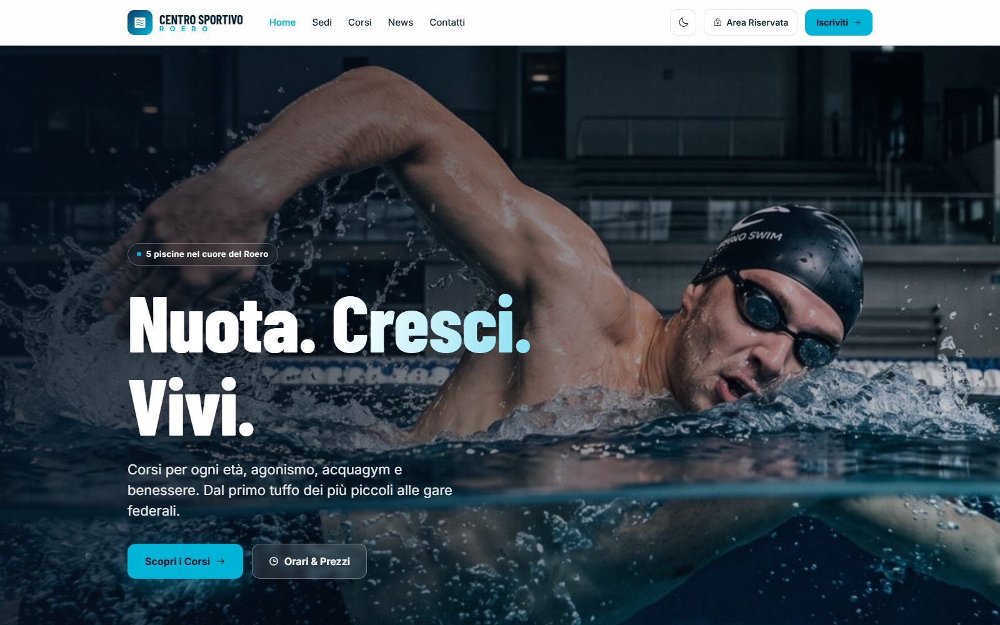

Case em destaque — Web App
Centro Sportivo Roero
Plataforma completa para um centro esportivo aquático com 5 sedes: disponibilidade de raias em tempo real, totem de check-in, CMS próprio e uma rotina de notícias com IA — substituindo um site que não era tocado desde 2005.
ProblemaSite de 2005 sem HTTPS nem versão mobile, navegação entre sedes feita só por imagens, reservas espalhadas em dois sistemas de terceiros e conteúdo que só mudava com ajuda técnica.
SoluçãoAs 5 sedes num só sistema, com raias em tempo real, totem de auto-atendimento, calendário unificado e painel administrativo com dois níveis de acesso.
ImpactoA equipe publica sozinha, sem programador. Ocupação vira dado real em vez de telefonema, e o site se mantém atualizado sem esforço editorial.
Next.jsTypeScriptSupabasen8nOpenAIVercel
CSRscreenshot da plataforma

Galeria · 5
Automação — rassegna stampa
Um site que se mantém vivo sozinho
Duas vezes por semana, uma rotina busca notícias reais de natação, polo aquático e nado artístico em cinco fontes, reescreve em italiano no tom do centro e deposita como rascunho no painel. Publicar continua sendo decisão humana — a máquina só elimina a página parada.